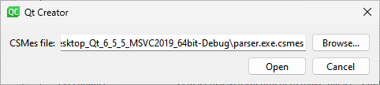
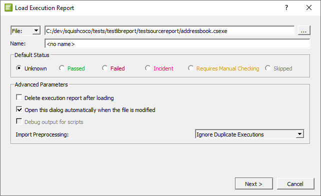

View code coverage reports from Coco
Note: Enable the Coco plugin to use it.
With Coco CoverageBrowser, you can analyze the test coverage by loading an instrumentation database (a .csmes file), which was generated by Coco CoverageScanner.
For more information about how to set up a project for code coverage in Qt Creator, see Set up code coverage from Coco.
To measure and check code coverage:
- Go to Analyze > Squish Coco.

- In CSMes file, select the instrumentation database to load.
- Select Open to start CoverageBrowser.
- In CoverageBrowser, go to File > Load Execution Report and select the
.csexefile for the coverage scan.
- To keep the execution report, clear Delete execution report after loading.
Open the analyzed files in Qt Creator. You can see the results of the analysis after the code in Edit mode. You can change the fonts and colors used for different types of results.
Disable viewing of code coverage from Qt Creator
After you have set an instrumentation database in Analyze > Squish Coco, CoverageBrowser is automatically started every time you start Qt Creator. To disable this, replace the content of CSMes file with an empty string.
Change fonts and colors
To change the default fonts and colors, go to Preferences > Text Editor > Font & Colors. Create your own color scheme and select new fonts and colors for the following results:
- Code Coverage Added Code
- Partially Covered Code
- Uncovered Code
- Fully Covered Code
- Manually Validated Code
- Code Coverage Dead Code
- Code Coverage Execution Count too Low
- Implicitly Not Covered Code
- Implicitly Covered Code
- Implicit Manual Coverage Validation
See also Enable and disable plugins, Set up code coverage from Coco, Font & Colors, and Analyzing Code.